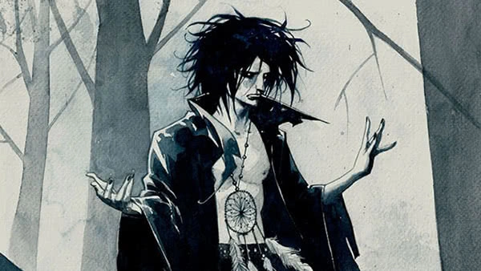
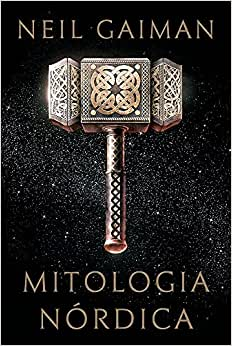
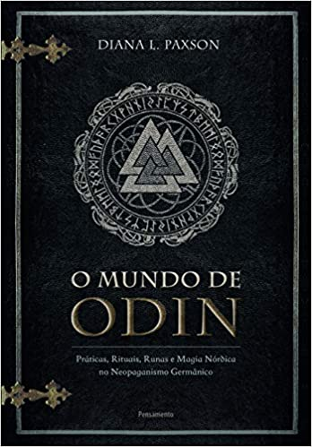
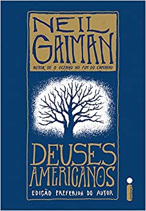

Niel Gaiman
Os incríveis quadrinhos de Neil Gaiman

A principal inspiração nos quadrinhos para Neil Gaiman foi o autor Alan Moore. Gaiman conheceu seu trabalho em Londres, enquanto esperava um trem. Encontrou um quadrinho do Monstro do Pântano escrita por Moore e começou a lê-lo. Ficou impressionado com o trabalho do autor e, desde então, se tornou um leitor regular de quadrinhos.
O primeiro trabalho de Gaiman na indústria dos quadrinhos foi escrevendo histórias para o personagem Miracleman. Após esse trabalho, passou a escrever para a série Future Shocks da revista de quadrinhos britânica chamada 2000AD. Continuou no ramo até que seus trabalhos chamaram a atenção da DC Comics, que contratou seus serviços.Depois de um tempo, o selo Vertigo da DC convidou Gaiman para reescrever um antigo personagem da empresa: o Sandman.
Sandman
É uma série em quadrinhos com um total de 75 edições. Conta a história de Sandman, uma entidade conhecida como um dos Perpétuos, seres poderosíssimos que personificam conceitos e aspectos do universo. No caso de Sandman, ele é a antropomorfização do Sonho. O quadrinho Sandman pode ser descrito como uma mistura de mitologias e história mundial com uma atmosfera de horror.
Com certeza, Sandman é a obra mais marcante da carreira de Neil Gaiman.
Os Livros da Magia
Outra série escrita para a DC Comics, contudo bem menor que Sandman. Concentrada em apenas quatro volumes, esse quadrinho conta a história de Timothy Hunter, um garoto inglês de cabelos pretos e óculos redondos que descobre que está destinado a se tornar o maior mago de mundo. Tymothy é guiado por vários feiticeiros do universo DC, como John Constantine, em uma jornada que visa ensiná-lo sobre a magia.
Existe a controvérsia de que Harry Potter seria um plágio do personagem de Timothy Hunter, uma vez que eles compartilham muitas semelhanças (inclusive ambos possuem uma coruja de estimação). Apesar disso, Neil Gaiman jamais acusou J.K. Rowling de copiá-lo, apenas disse que ou foi coincidência ou ambos se inspiraram nos mesmos arquétipos de fantasia.
Livros Escritos
Meus Livros Preferidos
- Mitologia nordica- A Historia dos Deuses

- Mundo de odin

- Deuses americanos

- Good Omens
>